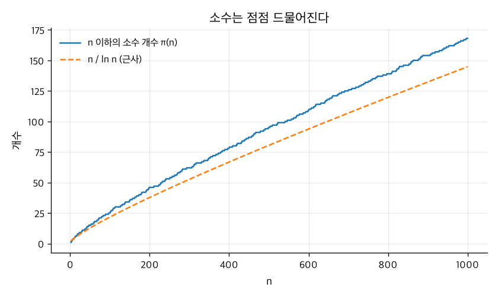

중1 수학 · 01
소인수분해
모든 수는 소수라는 '벽돌'로 만들어져 있다. 벽돌로 쪼개는 법을 배우고, 문제를 풀고, 파이썬으로 직접 만들어 본다.
1. 개념
아래 노란 상자는 글쓴이가 직접 설명을 쓰는 자리다. 그림은 먼저 만져 볼 수 있다.
1-1. 소수란 무엇인가
✍️ 여기에 직접 쓰기 — 중학교 1학년에게 말하듯이
- "약수"가 무엇인지 한 문장으로. 12의 약수를 전부 나열해 보여 준다.
- 약수가 딱 2개뿐인 수를 소수라고 한다. 왜 1은 소수가 아닌지 (약수가 1개뿐이라서).
- 소수가 아닌 2 이상의 수는 합성수. 합성수는 반드시 더 작은 수의 곱으로 쪼개진다.
- 아래 격자에서 2, 3, 5, 7을 차례로 눌러 보라고 안내한다. 이것이 '에라토스테네스의 체'.
1부터 100까지 — 소수를 눌러서 배수를 지워 보기
아직 안 지워진 수 중에서 가장 작은 수를 누르세요. 그 수의 배수가 지워집니다.
소수아직 모름지워짐 (배수)
1-2. 소인수분해 — 수를 소수의 곱으로 쪼개기
✍️ 여기에 직접 쓰기
- "소인수"는 약수 중에서 소수인 것. 12의 소인수는 2와 3.
- 쪼개는 방법: 가장 작은 소수 2부터 나누어떨어지는 동안 계속 나눈다. 안 되면 다음 소수 3, 5, 7...
- 거듭제곱으로 쓰는 법: 2 × 2 × 3 = 2² × 3. '밑'과 '지수'라는 말.
- 아무 수나 넣어 보라고 안내. 어떻게 쪼개도 결과가 항상 같다는 사실(산술의 기본 정리)을 한 문장으로.
나눗셈 사다리
1-3. 소수인지 어떻게 빨리 알아볼까 — √n까지만
✍️ 여기에 직접 쓰기
- 36의 약수를 짝지어 보면 (1,36) (2,18) (3,12) (4,9) (6,6). 6 다음부터는 앞에서 나온 짝이 뒤집힌 것뿐.
- 그래서 어떤 수가 n = a × b로 쪼개진다면, a와 b 중 작은 쪽은 반드시 √n 이하.
- 결론: 2부터 √n까지의 소수로만 나눠 보면 된다. 97은 2, 3, 5, 7까지만 보면 끝 (11 × 11 = 121 > 97).
1-4. 약수의 개수 — 세지 않고 계산하기
✍️ 여기에 직접 쓰기
- 60 = 2² × 3 × 5. 약수는 2를 0~2개, 3을 0~1개, 5를 0~1개 골라 곱한 것.
- 고르는 방법의 수 = 3 × 2 × 2 = 12. 즉 (지수+1)들의 곱.
- 위 사다리에서 60을 쪼갠 뒤 약수 개수가 12인지 직접 세어 보라고 안내.
1-5. 최대공약수와 최소공배수
✍️ 여기에 직접 쓰기
- 공약수·최대공약수(GCD), 공배수·최소공배수(LCM)가 무엇인지 생활 예시로 (초콜릿 나누기, 버스 두 대가 다시 만나는 시각).
- 소인수분해로 구하는 법: GCD는 공통 소인수의 작은 지수, LCM은 모든 소인수의 큰 지수.
- GCD × LCM = 두 수의 곱. 아래 표에서 확인하라고 안내.
1-6. 이게 어디에 쓰이나
✍️ 여기에 직접 쓰기 (짧게)
- 인터넷 보안(RSA 암호)은 "큰 수의 소인수분해는 엄청나게 어렵다"는 사실 위에 서 있다.
- 금융: 지급 주기가 다른 상품(월·분기·반기)이 언제 같은 달에 겹치는지는 LCM으로 안다. → 문제 9, 10.

더 알아보기: 소수는 뒤로 갈수록 드물어진다. 얼마나 드물어지는지를 정확히 말하는 것이 대학 정수론의 '소수 정리'다. (quant-math/m1/01 에서 생성)
2. 예제 따라 풀기
한 단계씩 누르면서 따라온다. 종이에 똑같이 써 보는 것이 제일 좋다.
예제 1. 60을 소인수분해하기
60 ÷ 2 = 30 가장 작은 소수 2로 나눈다. 나누어떨어진다.
30 ÷ 2 = 15 아직 2로 나누어떨어지니 또 2로.
15 ÷ 2 = ✗ → 15 ÷ 3 = 5 2로 안 되니 다음 소수 3으로.
5는 소수 → 끝 더 이상 쪼개지지 않는다.
60 = 2 × 2 × 3 × 5 = 2² × 3 × 5 나눈 수들을 전부 곱한 것. 같은 수는 거듭제곱으로 묶는다.
예제 2. 97은 소수인가?
√97 ≈ 9.8 → 9까지의 소수 2, 3, 5, 7로만 나눠 보면 된다 1-3에서 배운 것. 10 × 10 = 100 > 97.
97 ÷ 2 → 나머지 1. 안 됨 홀수니까 당연.
97 ÷ 3 → 나머지 1. 안 됨 각 자리 합 9 + 7 = 16, 3의 배수 아님.
97 ÷ 5 → 안 됨. 97 ÷ 7 → 나머지 6. 안 됨 끝자리가 0, 5가 아니다. 7 × 13 = 91, 7 × 14 = 98.
97은 소수 네 번만 나눠 보고 끝났다. 96번 나눠 볼 필요가 없었다.
예제 3. 72와 60의 최대공약수·최소공배수
72 = 2³ × 3² 72 → 36 → 18 → 9 → 3 → 1. 2가 세 번, 3이 두 번.
60 = 2² × 3 × 5 예제 1.
GCD = 2² × 3 = 12 둘 다 가진 소인수(2, 3)만, 지수는 작은 쪽.
LCM = 2³ × 3² × 5 = 360 나오는 소인수 전부(2, 3, 5), 지수는 큰 쪽.
확인: 12 × 360 = 4320 = 72 × 60 ✓ GCD × LCM = 두 수의 곱. 계산이 맞는지 검산할 때 쓴다.
3. 문제
종이에 먼저 푼다. 계산기 없이. 답을 넣으면 바로 채점되고, 틀리면 힌트가 나온다.
4. 파이썬으로 만들어 보기
방금 손으로 푼 '순서'를 그대로 코드로 옮긴다. 함수 몸통이 비어 있다. raise NotImplementedError 줄을 지우고 채운 뒤 실행하면 테스트가 돈다. 파이썬은 브라우저 안에서 돌아가므로 설치할 것이 없다.
파이썬을 아직 불러오지 않았다. (처음 한 번 약 10MB 내려받음)
편집 팁 — 들여쓰기는 스페이스 4칸. Tab 키를 누르면 4칸이 들어간다. 코드는 이 브라우저에 자동 저장된다.
VS Code에서 하고 싶으면 quant-math/m1/01_prime_factorization.py에 같은 과제가 있다.